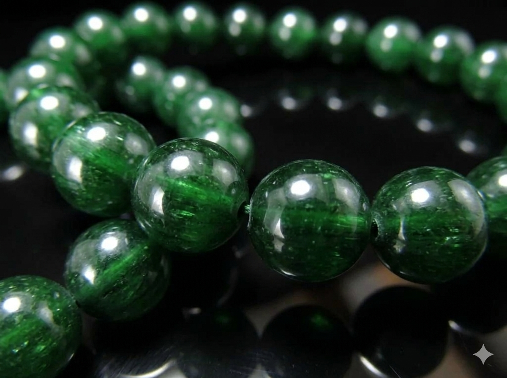

3つのプラン
⭐ おすすめ ⭐
松プラン
11月のチャンスを本気で活かしたい
59,800円

アクアマリン

ラピスラズリ

グリーントルマリン
アクアマリン
ラピスラズリ
グリーントルマリン
期待できる変化
- 感情のオーラが整い、
好江様の言葉と気持ちが自然に外に流れ出す - 「伝えたいのに言葉が出ない」が
「自然に言えた」に変わる - 「どうせ難しい」という先読みが和らぎ、
縁の流れに乗れるようになる - 好江様本来の大地のような包容力が、
彼に安心感として届くようになる - 今年巡っている喜びの縁の流れを、
最大限に活かせる状態が整う - 11月のタイミングを逃さず、
2人の縁を動かせる状態が整う
特典：月1回のオーラメンテナンス相談（3ヶ月間）、
浄化用水晶クラスター
 ※上記3種類の石から最高のバランスを考えて、
※上記3種類の石から最高のバランスを考えて、
1つ、もしくは2つのブレスレットをお届けします
浄化用水晶クラスター
1つ、もしくは2つのブレスレットをお届けします
竹プラン
感情のオーラを補いたい
29,800円
アクアマリン
ラピスラズリ
アクアマリン
ラピスラズリ
期待できる変化
- 言葉が出てくる、伝えやすくなる
- 縁の流れが少しずつ動き始める
- 「動けない」という感覚が和らいでくる
特典：浄化用水晶クラスター
※上記2種類の石から
バランスを考えたブレスレット1本をお届けします
※上記2種類の石から
バランスを考えたブレスレット1本をお届けします
梅プラン
まずは一歩踏み出したい
19,800円
アクアマリン
期待できる変化
- 「どうせ難しい」という感覚が少し和らぐ
- 感情の流れが穏やかに動き始める
特典：浄化用水晶クラスター
※アクアマリンのブレスレット1本をお届けします
※アクアマリンのブレスレット1本をお届けします
・ご注文から7〜10日以内に発送
・追跡番号付き
・専用の浄化・エネルギーチャージ済み